Plotting & Theme Functions
Source:vignettes/plotting_theme_functions.Rmd
plotting_theme_functions.RmdPlotting Functions
When working on research projects or Understand phases, there is often a set of charts you will create at the beginning, and then at multiple points throughout the project. These charts will help you perform common exploratory data analysis (EDA) tasks to better understand your data and identify areas of investigation. Some of these charts sit naturally in other packages such as:
- {ParseR} - descriptive plots of text distributions e.g. Pairwise Correlations, n-gram plots, Weighted log-odds
- {SegmentR} - plots for topic modelling outputs e.g. top terms
- {ConnectR} - network visualisations e.g. Retweet network, mention network
Other plots which do not have a clear and obvious location, e.g. sentiment distributions, volume over time etc. will sit here in {DisplayR}. They most likely will not be the centrepiece of a delivery, and they should not be used as a substitute for thinking about the problem at hand and creating bespoke graphics when called for*. They do however represent valuable efficiency gains in the EDA workflow, and prime clients for a Capture Intelligence deck or delivery.
*See the Capture Cookbook and Visualisation Guidelines for more information on creating Bespoke graphics and adhering to good data visualisation principles.
Volume Over Time
When working with the data from various Social Media APIs (Twitter, Facebook, Reddit etc.) there is usually a time stamp or date/time column, this column can be used to visualise when the conversation takes place and to identify when important changes in volume occur.
We’ll use {DisplayR}’s dataset:
df <- DisplayR::disp_exampleSingle Element - Ungrouped Data Frame
We feed the dataset into the disp_plot_vot function,
setting date = date, plot_type = “line” and time_unit =
“week”.
#to access function's documentation:
?dr_plot_vot
df %>%
dr_plot_vot(date_var = date,
plot_type = "line",
time_unit = "week")
#> Warning: Removed 1 row containing missing values (`geom_line()`).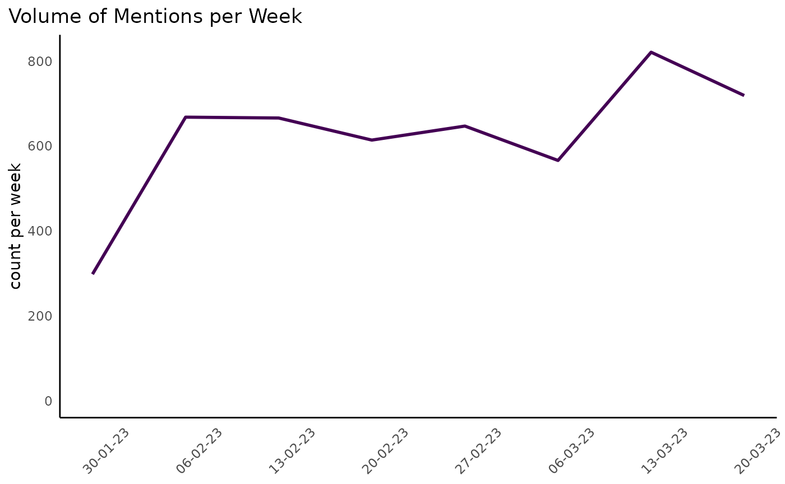
Alternatively, we could generate a plot where we count the volume per day:
df %>%
dr_plot_vot(date_var = date,
plot_type = "line",
time_unit = "day")
#> Warning: Removed 1 row containing missing values (`geom_line()`).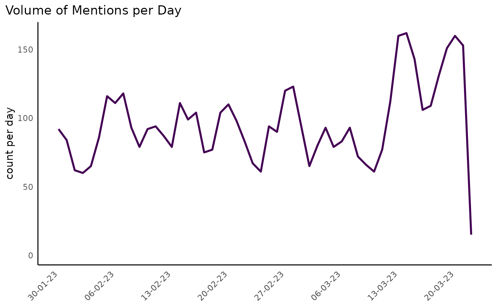
You’ll notice the plot’s title, y-axis label and x-axis text (there is no x axis label currently) change auto-magically.
There is also the option to use bars rather than a line, we’ll render a chart with bars and change the colour using the plot_type = “bar” and colour = “#d80a83” arguments:
df %>%
dr_plot_vot(date_var = date,
plot_type = "bar",
time_unit = "day",
colour = "#d80a83",
smooth = TRUE)
#> `geom_smooth()` using method = 'loess' and formula = 'y ~ x'
#> Warning: Removed 1 rows containing non-finite values (`stat_smooth()`).
#> Warning: Removed 1 rows containing missing values (`position_stack()`).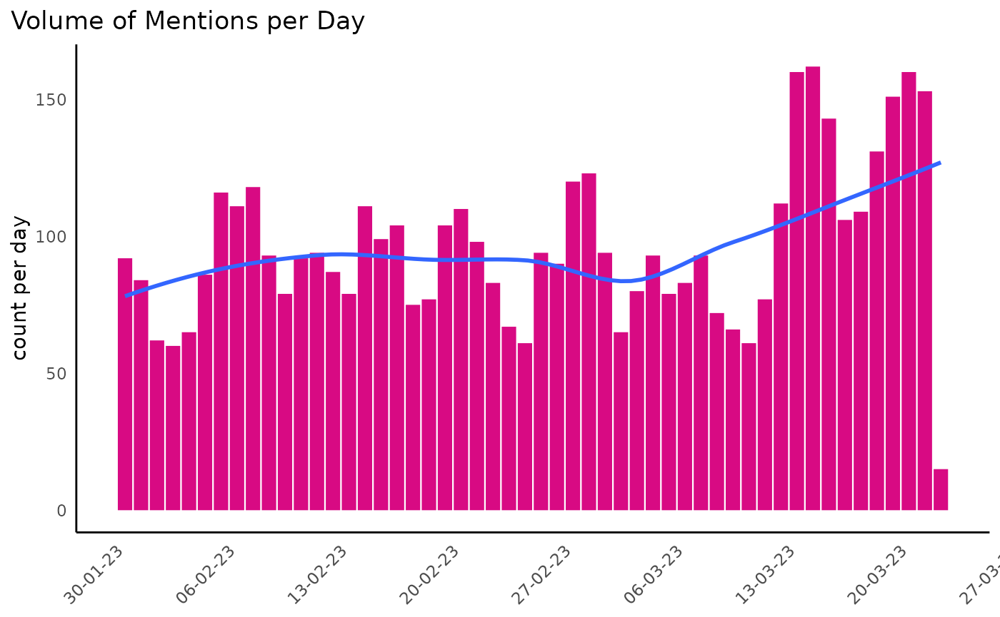
Multiple Elements - Grouped Data Frame
Often we want - or need - to visualise the trend in volume for multiple things at the same time, where things are similar objects contained in the same variable. For example, we may want to visualise the volume over time per topic, or per sentiment category.
We can plot the volume of each topic over time, though it can be (is nearly always) inadvisable to map 9 colours on a plot:
df %>%
filter(!is.na(sentiment)) %>%
dr_plot_vot_group(group_var = topic,
date_var = date,
time_unit = "week")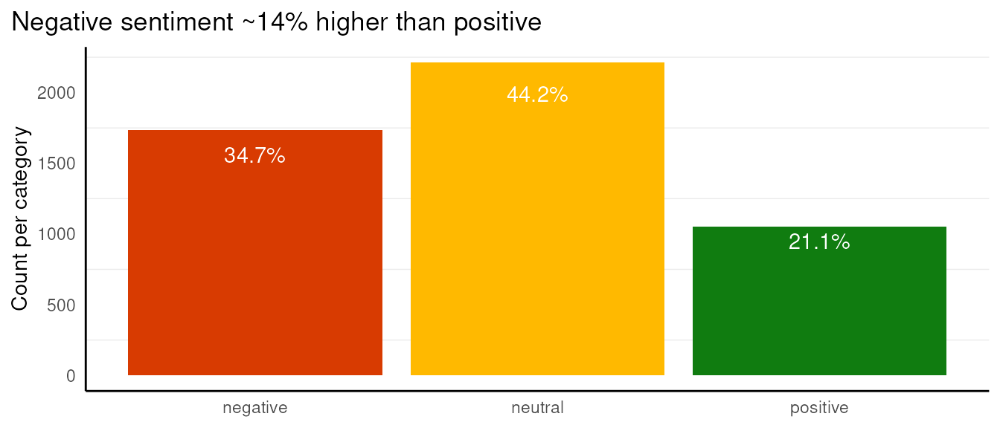
As there are only three sentiment categories, we could map sentiment
more simply, and use the scale_colour_manual function to
re-colour our lines:
sentiment_colours <- c("positive" = "#107C10", "negative" = "#D83B01", "neutral" = "#FFB900")
df %>%
filter(!is.na(sentiment)) %>%
dr_plot_vot_group(group_var = sentiment,
date_var = date,
time_unit = "day") +
ggplot2::scale_colour_manual(values = sentiment_colours) +
ggplot2::labs(title = stringr::str_wrap("Neutral and negative sentiment consistently higher than positive barring a brief period in the second week of March.", width = 80)) # Use stringr::str_wrap to wrap the title according to a specified with (# of characters)
#> Scale for colour is already present.
#> Adding another scale for colour, which will replace the existing scale.
Sentiment Distributions
We looked briefly at how to plot sentiment over time using the dr_plot_vot_group function, but we can also use some sentiment-specific functions to visualise sentiment.
We have:
- dr_plot_sent - a vertical bar chart showing the distribution of sentiment
- dr_plot_sent_group - stacked horizontal bar chart for group sentiment
- dr_plot_sent_vot - stacked bar chart specifically for sentiment categories
Ungrouped
When we want to plot a quick sentiment distribution chart using bars we can use the dr_plot_sent function, which has limited scope for customisation.
df %>%
dr_plot_sent(sentiment_var = sentiment,
bar_labels = "percent") +
labs(title = "")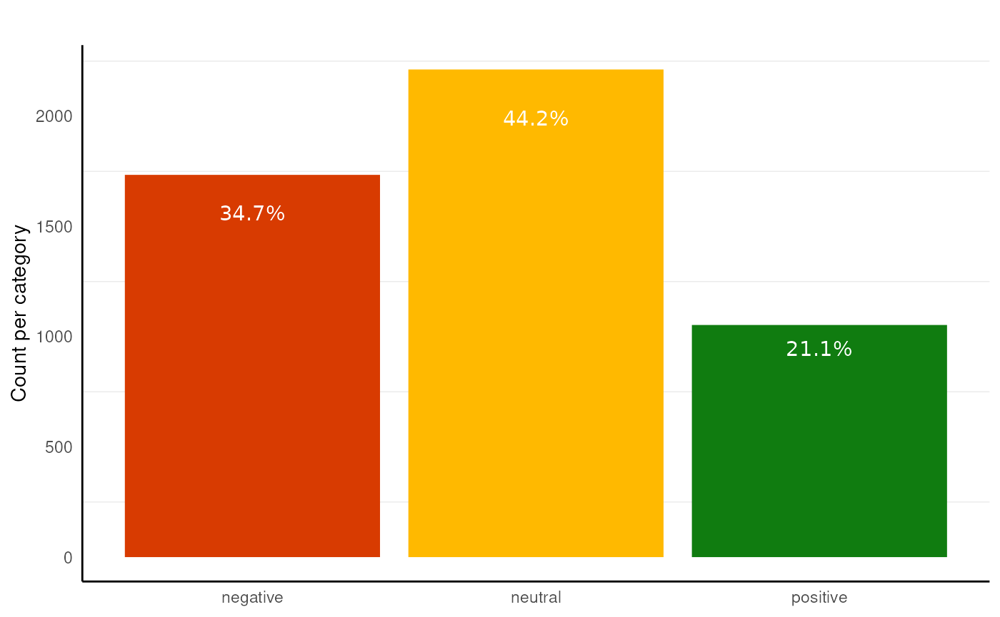
We could alternatively set the bar_labels to volume and add a descriptive title:
df %>%
dr_plot_sent(sentiment_var = sentiment,
bar_labels = "volume") +
labs(title = "Negative sentiment ~1.7x higher than positive")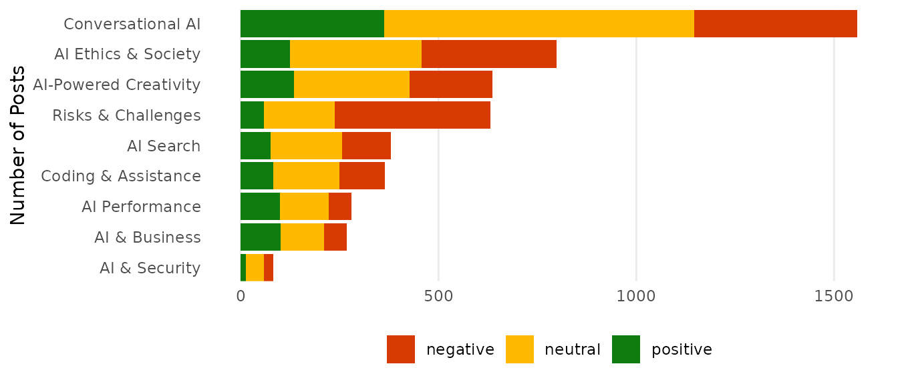
Or no bar_labels:
df %>%
dr_plot_sent(sentiment_var = sentiment,
bar_labels = "none")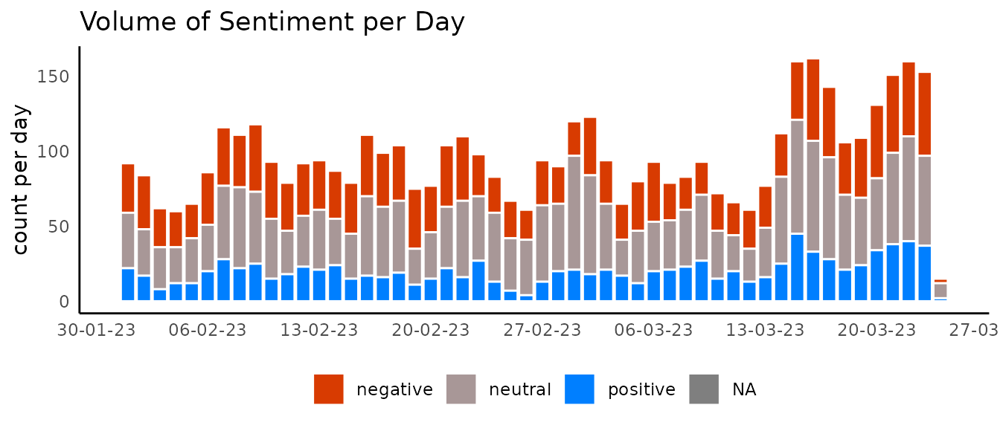
Grouped
More often than not, we won’t want to create just one sentiment chart, so we’ve created a function for plotting grouped sentiment charts.
The dr_plot_sent_group function comes with the
additional argument, group_var =. When setting
plot_type = "percent" and
bar_labels = "volume", we can add the y-axis (now x
visually) ticks back and give a title to make the plot more
explicit,
df %>%
dr_plot_sent_group(group_var = topic, plot_type = "percent", bar_labels = "volume") +
scale_y_continuous() + # Add the percentage back to the axis ticks
labs(y = "Percentage of posts") #Add the label back
#> Scale for y is already present.
#> Adding another scale for y, which will replace the existing scale.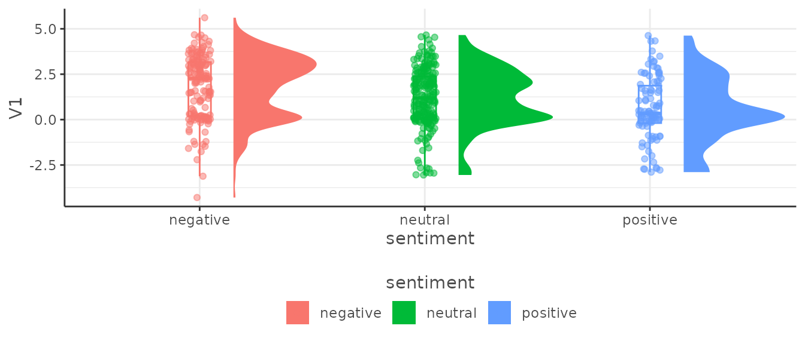
There are other options, we can set the bar’s labels to percent, and titles or change the axis labels, move the legend etc.
df %>%
dr_plot_sent_group(group_var = topic, plot_type = "percent", bar_labels = "percent") +
labs(x = "Percentage of posts", #We use x = because the plot has had its axes reversed
title = "Risks & Challenges drive negative sentiment",
subtitle = "Plot ordered by overall volume", #Just an example
caption = "Data Source: Social Media")+#Just an example
theme(legend.position = "right")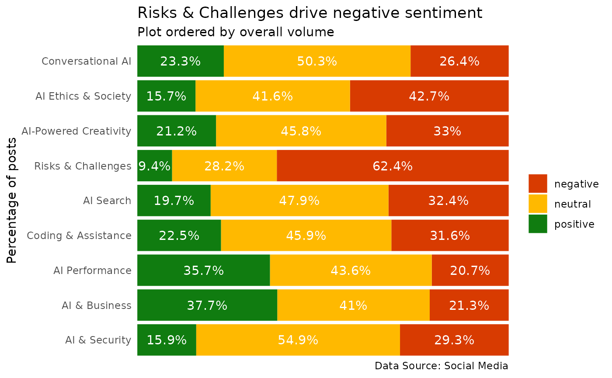
We can also plot the volumes rather than percentages on the bars themselves:
df %>%
dr_plot_sent_group(group_var = topic, sentiment_var = sentiment, plot_type = "volume", bar_labels = "percent")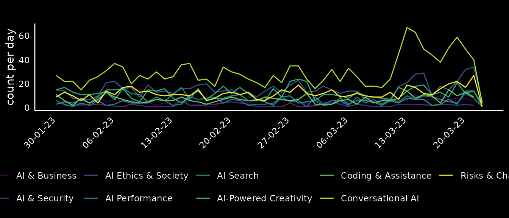
However, as we can see, this can lead to unwanted results, especially when using bar_labels. So we could remove the labels and add the gridlines back.
df %>%
dr_plot_sent_group(group_var = topic, sentiment_var = sentiment, plot_type = "volume", bar_labels = "none") +
theme(panel.grid.major.x = element_line()) +
scale_y_continuous()
#> Scale for y is already present.
#> Adding another scale for y, which will replace the existing scale.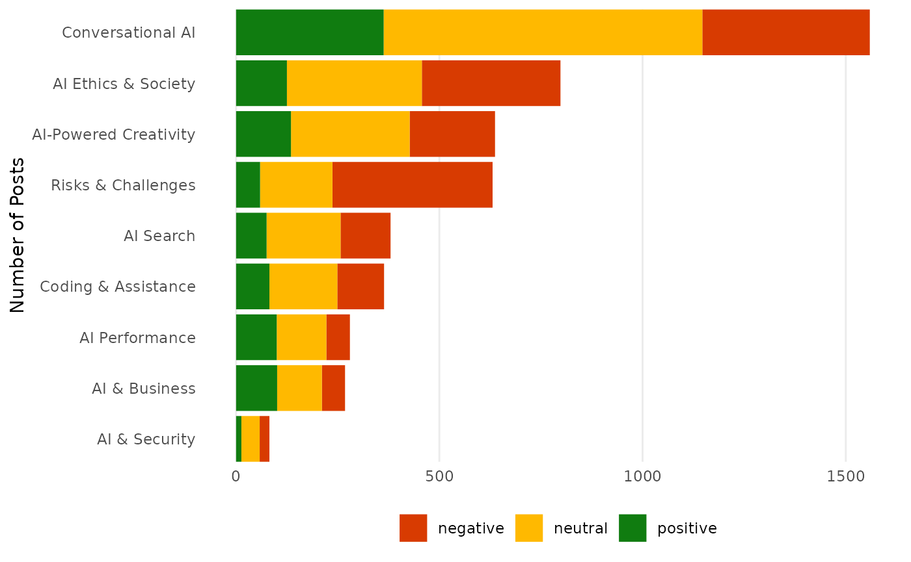
Sentiment over time
We showed an example of using the dr_plot_vot_group
function to visualise sentiment over time, there is also the
dr_plot_sent_vot function, made specifically for sentiment
and can provide bars or lines. As we’ve already seen lines for
sentiment, we’ll show bars. This function allows the user to enter the
sentiment mapping directly, so let’s switch to a more
accessibility-friendly colour palette.
df %>%
dr_plot_sent_vot(sentiment_var = sentiment,
date_var = date,
plot_type = "bar",
time_unit = "day",
sentiment_colours = c("positive" = "#007fff",
"negative" = "#D83B01",
"neutral" = "#a89797"))
#> Warning: Removed 1 rows containing missing values (`position_stack()`).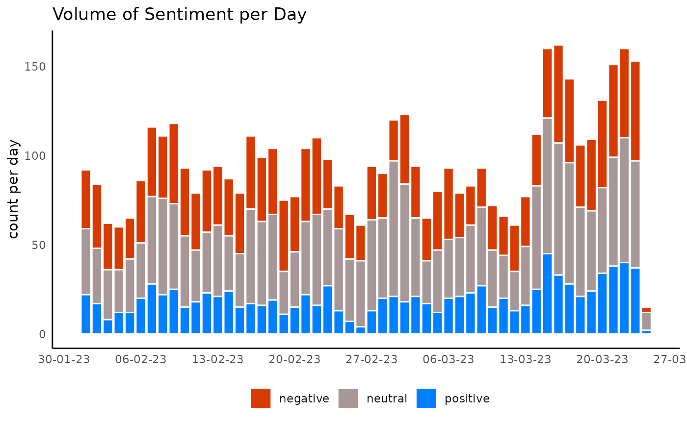
Theme Functions
There are a number of theme functions included in {DisplayR}, they are to be applied according to the nature of the project and tend to take care of colour palettes and fonts. If you think there is a theme, or a number of themes missing, submit an issue at: (https://github.com/jpcompartir/DisplayR/issues).
The general idea is to add the theme you need after rendering your plot.